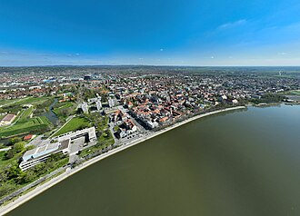
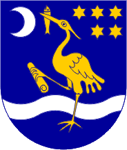

Slavonski Brod grad je u istočnoj Hrvatskoj. Smješten je na lijevoj obali rijeke Save. Po broju stanovnika drugi je grad u Slavoniji, a šesti u Republici Hrvatskoj.Administrativno je i upravno središte Brodsko-posavske županije. Tijekom Rimskog Carstva grad se zvao Marsonia, a od 1244. do 1945. godine Brod na Savi.

